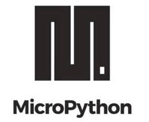
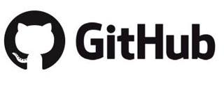

OctopusLab
OctopusLab
V těchto materiálech se sdružuje dokumentace, návody a tutoriály, části workshopů, projektů a ukázek použití. Důraz je kladen na MicroPython a popis knihoven pro Octopus FrameWork, kde komplexnější procesy rozdělujeme na jednodušší činnosti a jejich vazby.

Vývojové a výukové moduly
Co vlastně děláme? Vyvíjíme hardwarové moduly zaměřené na využití ESP32 a Micropythonu. Navrhujeme desky plošných spojů, které se dají podle potřeby proměnit v celou řadu zajímavých projektů pro robotiku, internet věcí a podobně. Námi navržené vývojové a experimentální desky, slouží i jako finálně zapojitelné moduly pro projekty nebo jejich části. Jednoduché (nebo částečně zapojené) "produkty" výborně pomáhají i při výuce. V základní části se zaměřujeme na jednu z našich "stavebnic" EDU-KIT1. Další informace můžete najít na webu http://www.octopuslab.cz
ESP32
Výrobcem tohoto "mikropočítače" je společnost Espressif (proto zkratka ESP). Na destičce připomínající poštovní známku je mikroprocesor s pamětí, a několika klíčovými komponenty včetně taktovacího krystalu, antény pro WiFi a Bluetooth. ESP32 je tak okamžitě připraveno k integraci do koncových produktů.
Přesnější název je mikrokontrolér, což je obvod, který kromě procesoru obsahuje i paměť a další části, především pro vstupy a výstupy nebo komunikaci. Pokud vás zajíma víc podrobností, naleznete je na další samostatné stránce ESP32
Micropython
 Micropython je "odlehčená" verze populárního programovacího jazyka Python. Je to přesněji softwarová implementace vyššího programovacího jazkyka kompatibilního s Python 3.x. Je napsaný v C a optimalizovaný pro použití v mikrokontrolérech.
Includes: complete parser, compiler, virtual machine, runtime system and garbage collector. (snad ani nepřekládat)
Note
Toto není výuka programování – ale jen ukázky a experimenty s přihlédnutím na sadu knihoven a modulů octopusLab pro práci s vybraným HW.
Pro podrobnější proniknutí do tajů programování v Pythonu doporučujeme:
Jak se zapojit?
,'''`.
/ \
|(@)(@)|
) (
/,'))((`.\
(( (( )) ))
) \ `)(' / (
Chobotnice je ráda za každý komentář :like:
Open source projekt je založen na spolupráci
Všechny podklady tohoto "manuálu" píšeme v markdownu a jsou veřejně na GitHubu, budeme rádi za vaše připomínky a nápady https://github.com/octopusengine/docs_octopuslab_cz
Každý může navrhovat doplnění, hlásit chyby a libovolným způsobem přispívat. Vždy, když se navrhovaná změna schválí (commit) do hlavní větve (master branch), automaticky se publikuje na těchto stránkách. Budeme rádi, když nám dáte vědět, jak se Vám s naším dokumentem pracuje. Vypadá to jenom jako taková blost, ale fakt to dalo dost práce.
 Co to je? A jak se s ním pracuje?
Za tým octopusLABu: Honza Čopák, Petr Kracík, Vašek Chalupníček, Vladimír Jiříček, Jan Češpivo, Milan Špaček, Metěj Suchánek a další